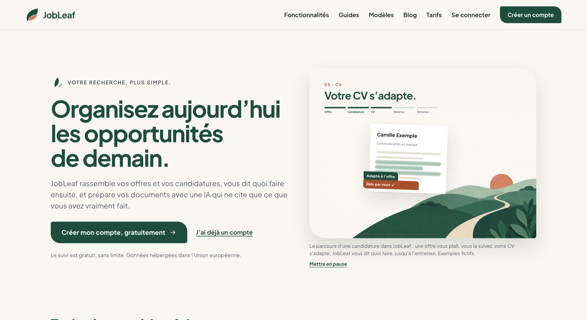
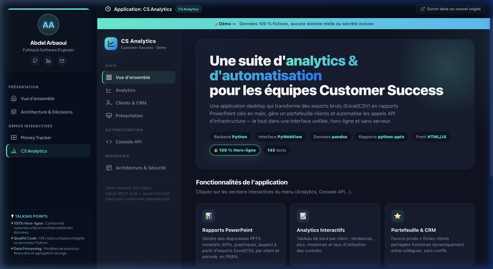
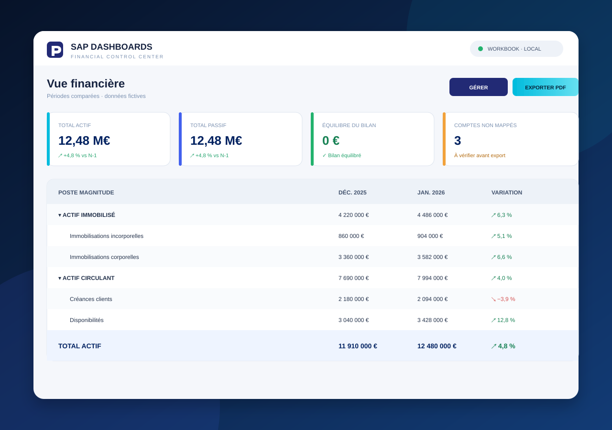
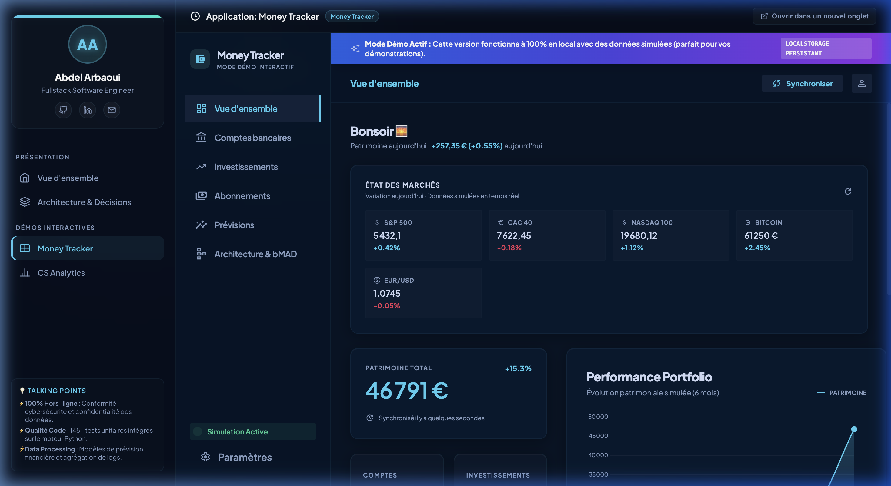
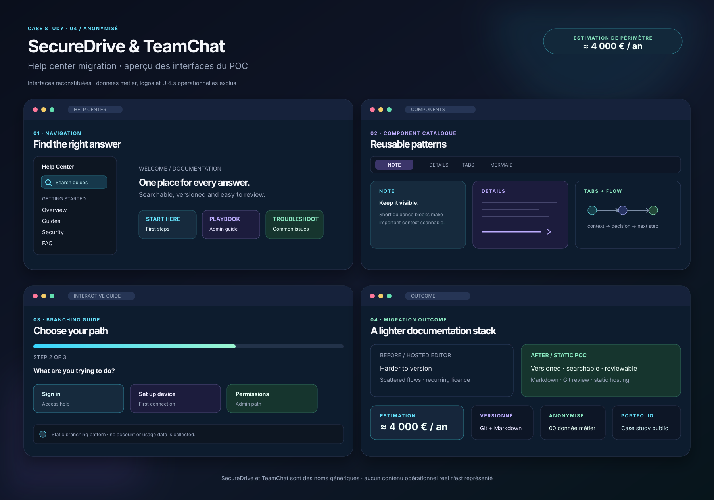

JobLeaf
Aide un chercheur d'emploi à savoir quoi faire ensuite : suivi des candidatures, analyse offre et parcours avec preuves citées, CV adapté sans rien inventer, rien envoyé à sa place.
- Node.js
- Supabase
- Cloudflare
- Stripe
Trois ans en relation client B2B, en cybersécurité. J'utilise la donnée et l'automatisation pour soutenir l'adoption produit et l'expérience client.
Customer Success · cybersécurité B2B
Chez Thales, j'ai suivi ~40 comptes pour 93 % de rétention et 500 K€ d'ARR. En parallèle, j'ai conçu CS Analytics, adopté par 4 collègues, et JobLeaf, un SaaS en production.
J'ai commencé côté vente, chez Inetum : appels d'offres, rendez-vous clients et une équipe de cinq consultants à suivre. J'y ai aussi développé un outil IA pour retrouver les bons profils en interne, puis formé l'équipe à s'en servir.
Chez Thales, je suis passé au Customer Success sur une plateforme de messagerie chiffrée : QBR avec des RSSI, incidents à coordonner, renouvellements. Le reporting prenait du temps, alors j'ai construit CS Analytics, qui fait gagner deux heures par rapport.
Depuis, je continue : JobLeaf est en production, avec plus de 350 CV analysés. Le principe reste le même : comprendre le besoin, puis livrer quelque chose qui sert vraiment.
Trois expériences, du plus récent au plus ancien. Le détail complet est dans le CV.
2026 – en cours
SaaS de recherche d'emploi · projet personnel
Août 2025 – sept. 2026
Cybersécurité et communications sécurisées · Citadel / Cryptobox
Sept. 2022 – nov. 2024
Cybersécurité, cloud et infrastructure
Un produit en ligne, deux démos et deux études de cas.

Aide un chercheur d'emploi à savoir quoi faire ensuite : suivi des candidatures, analyse offre et parcours avec preuves citées, CV adapté sans rien inventer, rien envoyé à sa place.

Transforme exports CRM et données d'usage en analyses par compte et en rapports PowerPoint ou Power BI.

Un classeur Excel autonome qui transforme des balances SAP en bilan multi-périodes : mapping hiérarchique, contrôles d'équilibre, export PDF.

Comptes, investissements et abonnements dans un tableau de bord hors-ligne, avec un simulateur d'intérêts composés.

POC anonymisé : deux documentations produit migrées vers un Help Center statique, versionné sous Git, avec arbitrages et budget estimé.
Pour un poste, une mission ou une question sur un projet, le plus simple reste un e-mail.
abdelarbb@gmail.com© 2026 Abdel Arbaoui · Paris
Retour en haut